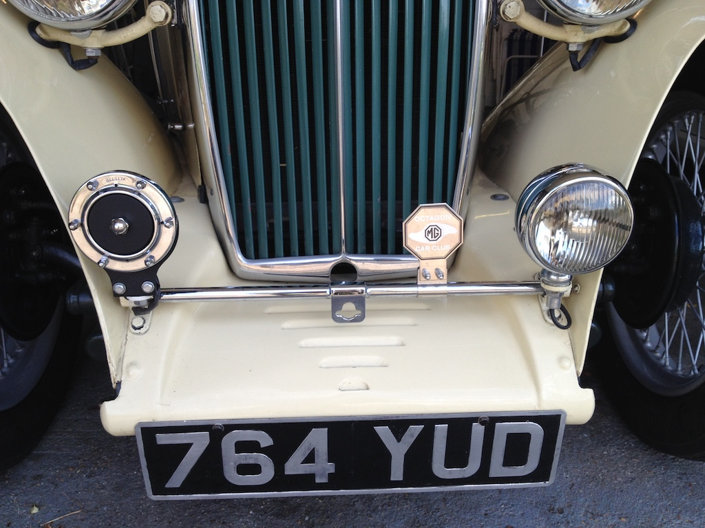
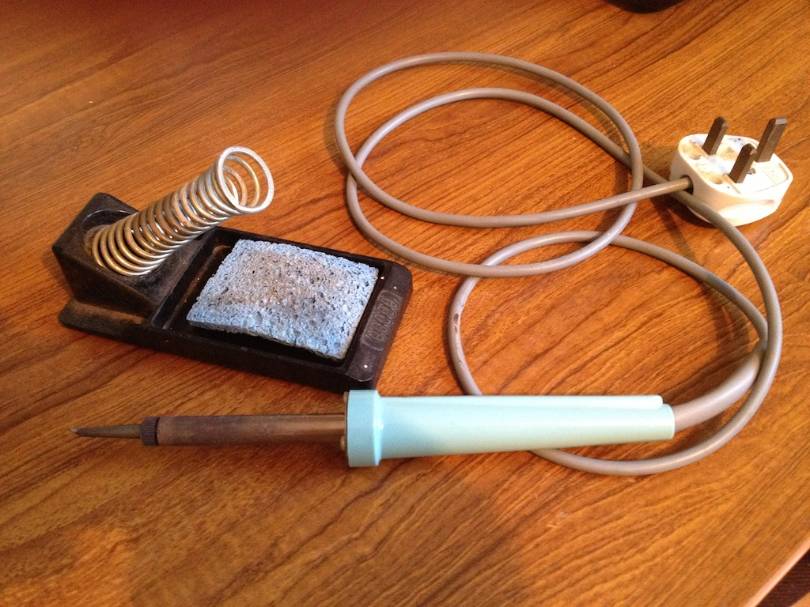

Car Horn - Part 4
Today I bolted the horn back on to the front of my car, but then I had to connect up the wires so that it would work. If you remember from the diagram on another page, there is a wire from the negative terminal of the battery to the horn, a wire from the horn to the horn-push inside the car and from the horn-push to the positive terminal of the battery. The wires were already in the car, I just needed to connect them to the horn.
The wires in the car need to be flexible so that they can easily bend through holes and around the car, so they are made from a number of thin copper wires that are twisted together and then put inside a plastic sleeve. To stop the ends of the wire spreading out when I push it into a small hole, I soldered the ends. Solder is a metal, made from tin, copper and silver, that melts at quite a low temperature. It is used for joining wires and other electrical parts and for joining copper water pipes. The photo shows my soldering iron. When you plug it in, the tip gets very hot, so I put it in the spiral wire holder. The blue sponge is wet and used to clean the end of the soldering iron.
After making the ends of the wires solid I connected them to the horn. Toot, toot!